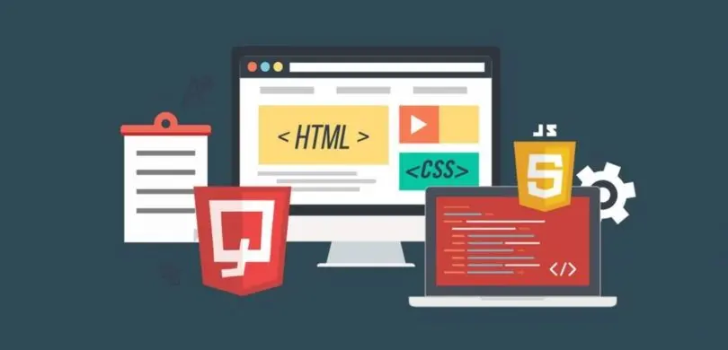

Desarrollo Front-End

Problemática del Desarrollo con CSS
El desarrollo con CSS puede ser un proceso lento, ya que cada proyecto requiere un diseño único, preparación de gráficos y depuración para navegadores.
No existen normas estrictas de nomenclatura e identificación, lo que dificulta la colaboración en proyectos grandes.
¿Qué es un Framework CSS?
Es un conjunto de herramientas y convenciones que facilitan la reutilización de código, reducen el tiempo de desarrollo y mejoran la estructura del proyecto.
Ventajas
- Aumenta la productividad
- Código más consistente y estructurado
- Facilita la depuración y el mantenimiento
- Optimiza el trabajo en equipo
Desventajas
- Curva de aprendizaje inicial
- Posible exceso de código
- Clases no semánticas
- Restricciones en el diseño
Panorámica de Frameworks CSS
Existen varios frameworks CSS como Bootstrap, Foundation y Materialize que facilitan la creación de interfaces responsivas y compatibles con distintos navegadores.

Bootstrap
Framework CSS popular y versátil para crear interfaces
Materialize
Framework CSS basado en Material Design de Google